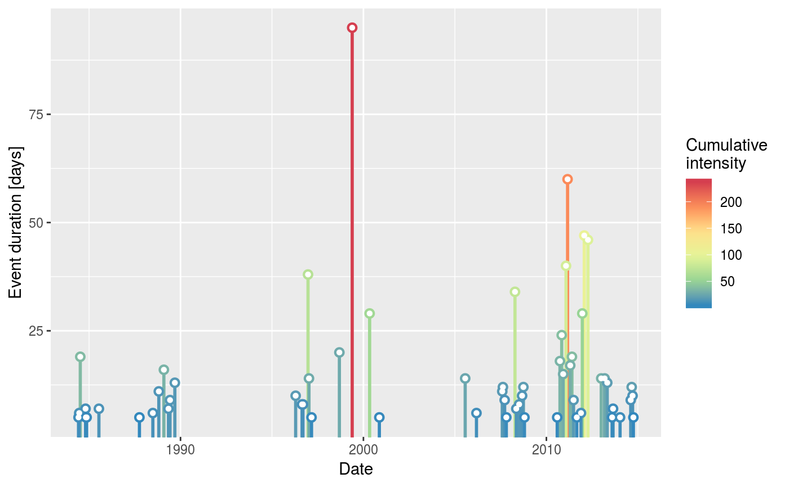
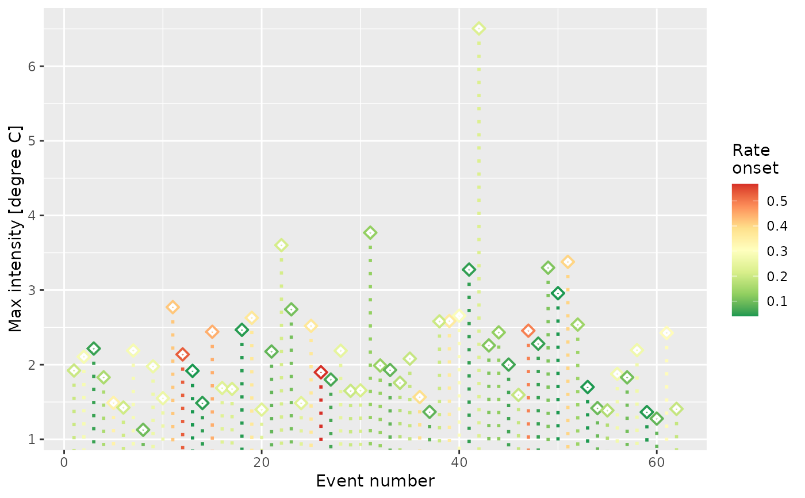
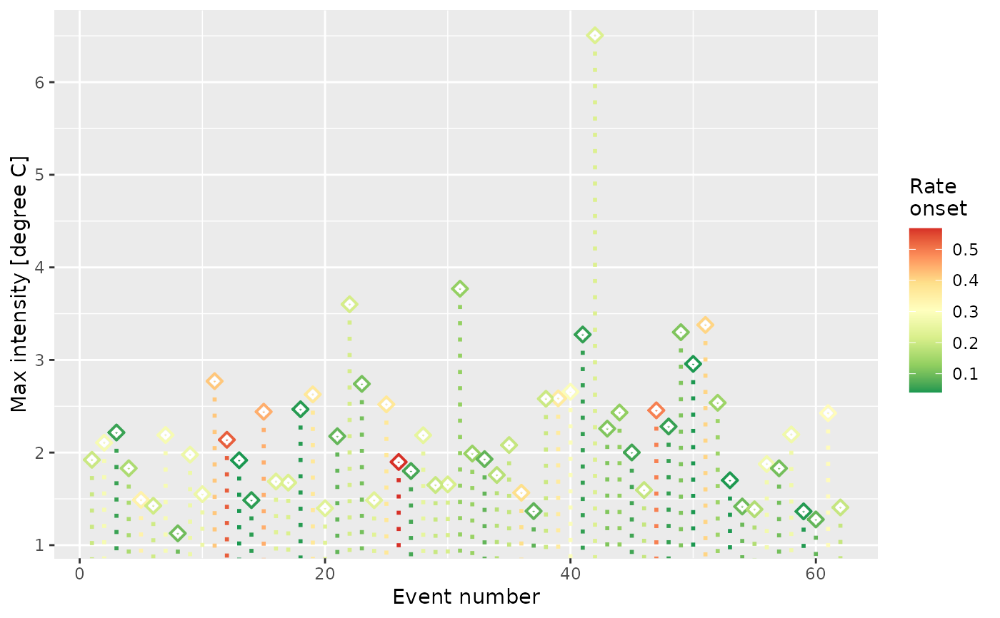

The function will return a graph of the intensity of the selected
metric along the *y*-axis versus a time variable along the *x*-axis.
The number of top events (n) from the chosen metric may be highlighted
in a brighter colour with the aesthetic value colour_n.
This function differs in use from lolli_plot
in that it must be created as a ggplot2 'geom' object. The benefit of this being
that one may add additional information layer by layer to the figure as
geoms as necessary.
geom_lolli(
mapping = NULL,
data = NULL,
...,
n = 0,
na.rm = FALSE,
show.legend = NA,
inherit.aes = TRUE
)Arguments
- mapping
Set of aesthetic mappings created by
aes()oraes_(). If specified and inherit.aes = TRUE (the default), it is combined with the default mapping at the top level of the plot. You must supply mapping if there is no plot mapping.- data
The data to be displayed in this layer. There are three options:
If NULL, the default, the data is inherited from the plot data as specified in the call to
ggplot().A data.frame, or other object, will override the plot data. All objects will be fortified to produce a data frame. See
fortify()for which variables will be created.A function will be called with a single argument, the plot data. The return value must be a
data.frame, and will be used as the layer data.
- ...
other arguments passed on to
layer. These are often aesthetics, used to set an aesthetic to a fixed value, likecolor = "red"orsize = 3. They may also be parameters to the paired geom/stat.- n
The number of top events to highlight as based on the value provided to
aes(y). Default is 0.- na.rm
If
FALSE(the default), removes missing values with a warning. IfTRUEsilently removes missing values.- show.legend
Logical. Should this layer be included in the legends?
NA, the default, includes if any aesthetics are mapped.FALSEnever includes, andTRUEalways includes. It can also be a named logical vector to finely select the aesthetics to display.- inherit.aes
If
FALSE, overrides the default aesthetics, rather than combining with them. This is most useful for helper functions that define both data and aesthetics and shouldn't inherit behaviour from the default plot specification, e.g.borders().
Aesthetics
geom_lolli understands the following aesthetics (required aesthetics
are in bold):
xyalphacolorlinetypesizeshapestrokefillcolour_nWhile this value may be used as an aesthetic, it works better as a parameter for this function because it is set to use discrete values. One may provide continuous values tocolour_nbut remember that one may not provide multiple continuous or discrete scales to a single ggplot2 object. Therefore, if one provides a continuous value toaes(colour), the values supplied tocolour_nmust be discrete.ggplot2will attempt to do this automatically.
See also
lolli_plot for a non-geom based lolliplot function.
Examples
ts <- ts2clm(sst_WA, climatologyPeriod = c("1983-01-01", "2012-12-31"))
res <- detect_event(ts)
mhw <- res$event
library(ggplot2)
# Height of lollis represent event durations and their colours
# are mapped to the events' cumulative intensity:
ggplot(mhw, aes(x = date_peak, y = duration)) +
geom_lolli(aes(colour = intensity_cumulative)) +
scale_color_distiller(palette = "Spectral", name = "Cumulative \nintensity") +
xlab("Date") + ylab("Event duration [days]")
#> Warning: Using the `size` aesthetic with geom_segment was deprecated in ggplot2 3.4.0.
#> ℹ Please use the `linewidth` aesthetic instead.

# Height of lollis represent event durations and the top three (longest)
# lollis are highlighted in red:
ggplot(mhw, aes(x = date_peak, y = duration)) +
geom_lolli(n = 3, colour_n = "red") +
scale_color_distiller(palette = "Spectral") +
xlab("Peak date") + ylab("Event duration [days]")
 # Because this is a proper geom, any number of ill-advised things
# may be done with it:
ggplot(mhw, aes(x = event_no, y = intensity_max)) +
geom_lolli(shape = 5, aes(colour = rate_onset), linetype = "dotted") +
scale_color_distiller(palette = "RdYlGn", name = "Rate \nonset") +
xlab("Event number") + ylab("Max intensity [degree C]")

# Because this is a proper geom, any number of ill-advised things
# may be done with it:
ggplot(mhw, aes(x = event_no, y = intensity_max)) +
geom_lolli(shape = 5, aes(colour = rate_onset), linetype = "dotted") +
scale_color_distiller(palette = "RdYlGn", name = "Rate \nonset") +
xlab("Event number") + ylab("Max intensity [degree C]")
